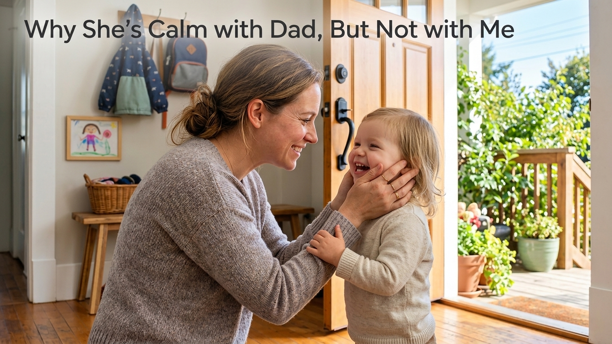
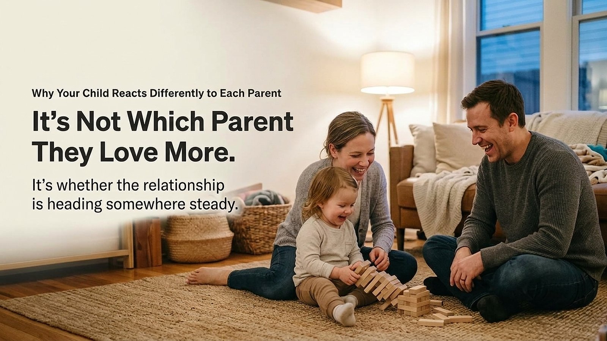

Your child falls apart every time you leave. Not a whimper, a real meltdown, the kind that takes ten minutes to talk down even after the door's closed. Then your partner leaves for four days on a work trip, walks back in, and your child barely looks up from a toy before climbing into their lap like nothing happened.
You've probably already had the thought, even if you didn't say it out loud: what does that mean about the two of us?
It sits under a dozen smaller questions. Is this normal? Does it mean something's off between us? Does the calmer goodbye mean they're more attached to your partner, more secure, more sure of them?
Researchers have actually studied this exact pattern, children who react very differently to the same kind of separation depending on which parent is leaving. What they've found complicates the assumption most of us start with, though maybe not in the direction you'd expect.
Does the Harder Goodbye Mean Something's Wrong?
The instinct is to read it as a scorecard. Harder goodbye, weaker relationship. Calmer goodbye, stronger one.
That instinct comes from an older idea about attachment: that a child either is securely attached or isn't, as a fixed trait, and any adult who mattered to them would see roughly the same pattern. If that were true, a harder goodbye with you than with your partner would be telling you something real and specific about your relationship with your child.
It's a reasonable thing to worry about. It's also not quite what the research supports.
What Researchers Actually Found When They Compared the Two
In 1981, Mary Main and Donna Weston tested that assumption directly. They studied toddlers with both parents and found that a child's classification with their mother didn't reliably predict their classification with their father in that sample. A child could look steady with one parent and anxious with the other, and both readings would be accurate, about two separate relationships, not two grades on the same child.
That single study is where the idea that attachment is relationship-specific, not something a child simply has, comes from. It's real, and it's been influential. It's also one study, from 1981, and one study is not the same thing as the current state of the evidence.
One Study Isn't the Whole Picture
When researchers later pooled data across many more studies, the picture got more precise, and a little more complicated.
A meta-analysis of 95 studies using behavioral measures of attachment in infants and toddlers, reported by Pinquart in 2022 (a paper I could access only through its abstract and its citation in later work, not the full text), found a significant correlation between how secure a child is with their mother and how secure they are with their father, r = 0.32. A separate, large longitudinal study, this one fully accessible, followed 230 firstborn children, average age about 31 months, through the birth of a second child, and found almost the same number on its own: a mother-father security correlation of .31 before the sibling arrived, easing to .25 a year later, still statistically significant. That study's population is narrower than "toddlers in general," it's firstborns specifically navigating a new sibling, so its number is best read as one data point converging with Pinquart's broader one, not as its own general finding about toddlers.
Two different datasets landing in roughly the same place is worth taking seriously: the link between how a child does with one parent and how they do with the other is real, not zero. It's also modest. A correlation of .3 leaves an enormous amount of room for one relationship to look harder than the other without that gap meaning very much.
So the accurate version of this research is narrower than "these are two totally separate facts." It's closer to: related, weakly, with wide room for individual variation. That's still useful. It's just not as clean as the popular one-liner.

What a Weak Link Actually Leaves Room For
Here's what I think is fair to draw from that, and what I don't.
What the research found: a modest, real correlation between security with each parent, not independence, not strong prediction either.
What can reasonably be inferred from that: one hard goodbye with you, compared against an easy one with your partner, is weak evidence at best about the underlying quality of your specific relationship with your child. The correlation is real enough that a pattern across many different days, with many different situations, is more informative than any single morning.
Where that leaves a Nestly-level takeaway, not a research finding: the harder relationship isn't automatically the worse one, and the calmer one isn't automatically the model the other should be measured against. Two things can plausibly explain a gap without either parent doing anything wrong: whoever handles the day-to-day separations, drop-off, bedtime, the daily logistics, is also the one whose leaving changes more about the child's day in the moment. And a child's temperament can interact differently with two different adults' pace and tone around goodbyes.
A Question to Ask Instead of Keeping Score
This isn't a clinical checklist, and it isn't validated the way a diagnostic tool would be. It's a short, honest way to slow down before turning one hard morning into a verdict.
- What do I actually know about this relationship over time, not just from this one goodbye, and not by comparing it to a different relationship?
- Has anything else changed recently, a move, a new sibling, a schedule shift, that could be part of this?
None of these questions has a research-backed "right" answer. They're a way to check your own interpretation before you settle on it.
When It's Worth a Closer Look
None of this is permission to stop paying attention. If a child is distressed with one adult across many different days, in different situations, and it isn't easing, that's still worth taking seriously, and worth raising with a pediatrician if it persists. What the research pushes back on is treating a single hard morning, or a comparison to how "easy" the child is with someone else, as a verdict on its own.
Parents Also Wonder

Your child will probably still fall apart at the door tomorrow. That's not nothing, but it isn't the verdict it feels like at 8 a.m. either. The more useful question isn't which parent your child loves more. It's whether this specific relationship, watched over weeks rather than one morning, is heading somewhere steady.
Community
Join the Conversation
If this sounds like your house, you're welcome to share what you've noticed below.
Sign in with GitHub to join the public discussion.
🙌 No account needed — just share your thoughts below.
Thanks — your comment has been submitted and will appear here once reviewed.
Something went wrong submitting your comment. Please try again in a moment.